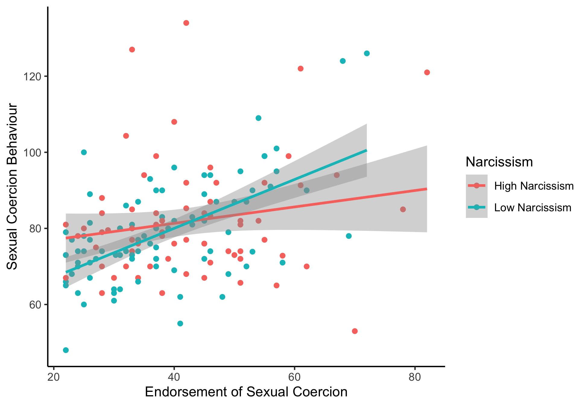

Dissertation Supervision
I supervise dissertation students as part of the psychology
undergraduate and MSc programmes at the University of Stirling - this
involves developing and conducting a research project in collaboration
with students. Dissertation supervision includes supporting students
through all stages of the research process, including developing a
research question, designing a study to test hypotheses, collecting the
data, analysing the data, and interpreting and writing up the findings
in a dissertation.
For undergraduate or MSc students
considering me as a potential supervisor, my aim with dissertation
projects is to conduct high-quality research that could lead to a
publication in a scientific journal. I’m usually happy for students to
explore their own topics of interest related to evolutionary psychology
or the social perception of faces. If there is a potential idea that you
would like to explore, I would encourage you to email me at
anthony.lee@stir.ac.uk.
Listed below are
papers that include work from dissertation projects.
Undergraduate Dissertations
Does beliefs in gender role stereotypes influence use of facial gender typicality when making sexual orientation judgements?
Maisie proposed a novel hypothesis that predicted that people with stronger beliefs in gender stereotypes were more likely to use facial gender atypicality cues (i.e., the femininity of male faces, or the masculinity of female faces) when making judgements of sexual orientation. We investigated this in Maisie's dissertation, and indeed, results supported the hypothesis. We subsequently replicated the finding with a second study and published both together in the journal Archives of Sexual Behavior.
De La Mare, J. K., Taylor, M. G., & Lee, A. J. (2024) Does
beliefs in gender role stereotypes influence use of facial gender
typicality when making sexual orientation judgements?
Archives of
Sexual Behavior.
FULL
TEXT AVAILABLE
Lee, A. J., Jones, B. C., Zietsch, B. P., Jern, P., Connolly, H.,
& Marcinkowska, U. (2023) No evidence that sociosexual orientation
moderates effects of conception probability on women’s preferences for
male facial masculinity.
Scientific Reports, 13, 10245.
FULL
TEXT AVAILABLE
Does resource scarcity predict women's attraction to masculine men?
Nikita was interested in women's preference for facial masculinity, and I suggested she investigate the impact of resource scarcity. As predicted, we found that material scarcity (and not other types of scarcity) was associated with women's preference for facial masculinity.
Lee, A. J., & McGuire, N. K. J. (2023) Women’s preferences for
masculinity in male faces are predicted by material scarcity, but not
time or psychological scarcity.
Evolutionary Psychology, 21(3).
FULL
TEXT AVAILABLE
Lee, A. J., De La Mare, J. K., Moore, H. A., & Umeh, P. C.
(2021) Preference for facial symmetry depends on study design.
Symmetry, 13(9), 1637.
FULL TEXT
AVAILABLE
Postgraduate (MSc) Dissertations
Are people attracted to those with a similar personality?
Jess was interested in whether people are attracted to those who have a similar personality in online dating apps. Jess created realistic dating profiles that varied in personality, and measured the personality of participants. Indeed, this seems to be the case for some personality traits, such as agreeableness, openness, and extraversion. Jess went on to do a PhD in the lab.
De La Mare, J. K., & Lee, A. J. (2023) Assortative preferences
for personality and online dating apps: Individuals prefer profiles
similar to themselves on agreeableness, openness, and extraversion.
Personality and Individual Differences, 208, 112185.
FULL
TEXT AVAILABLE
Can you tell a good father from his face?
Ronja was interested in perceptions of parental involvement from male faces, and conducted an ambitious project for her dissertation where she collected facial photographs of fathers and had them rated on parental involvement. She found that people use facial attractiveness as a cue when estimating parental ability.
Bartlome, R. I., & Lee, A. J. (2023) Facial attractiveness, but
not facial masculinity, is used as a cue to paternal involvement in
fathers.
Adaptive Human Behavior and Physiology, 9, 182-197.
FULL
TEXT AVAILABLE

What developmental factors predicts engagement in sexual coercive behaviours?
Aoife and Roisin were psychology conversion students interested in forensic psychology, so we developed a project investigating factors that would predict men's engagement in sexual coercive behaviours from an evolutionary psychology perspective. This included developing a new scale to measure sexual coercive behaviours from participants.
McCollam, R., Mullaney, A., & Lee, A. J. (2021) Is the link
between endorsement and engagement in sexual coercion associated with
life history strategy?
Personality and Individual Differences,
180, 110999.
FULL
TEXT AVAILABLE